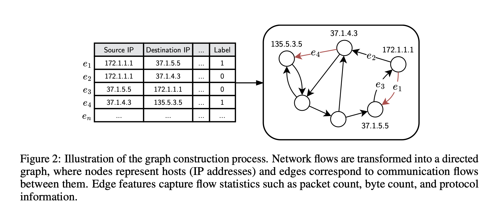
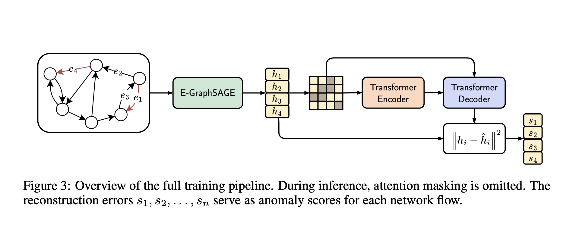
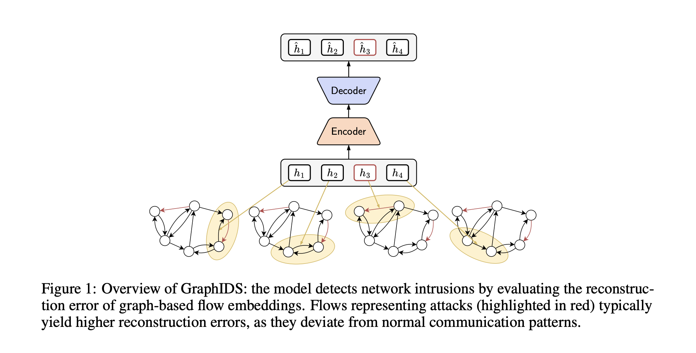
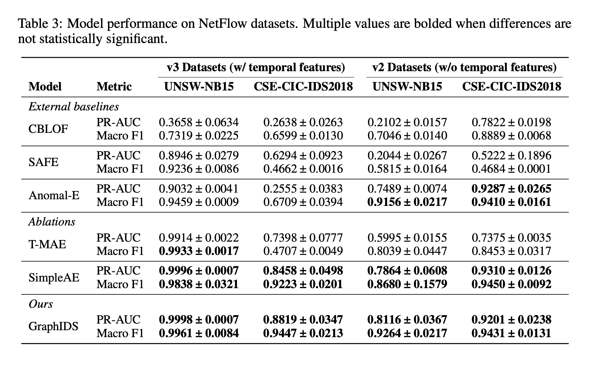

A systematic study of GraphIDS (Guerra et al., NeurIPS 2025), accompanied by four methodological extensions addressing temporal reasoning, masking strategy, packet-level feature integration, and evaluation on real-world botnet traffic.
Guerra, Chapuis, Duc,
Mozharovskyi, Nguyen
NeurIPS 2025
Multi-host NIDS
Self-supervised learning
End-to-end GNN + MAE
MIT Manipal
April 2026
A S Aravinthakshan
Janak Shah
Aryan Kudva
Akshat Agarwal
Supervised approaches require large volumes of labelled attack traces. Labels age as adversary tooling evolves, necessitating frequent retraining.
Models fit to known attack patterns exhibit degraded performance on zero-day variants and behavioural drift.
PCA, Isolation Forest, and CBLOF treat flows as independent observations, discarding host-level topology and inter-flow co-occurrence.
Modern enterprise networks generate on the order of 10⁹ flows per day. Effective detection demands a label-efficient, structure-aware, and drift-tolerant formulation.
Under these assumptions, intrusion detection reduces to a one-class distribution modelling problem over flow representations enriched with graph context.
Hosts (IP addresses) are nodes; network flows are directed edges carrying NetFlow statistics as edge features.


E-GraphSAGE — inductive message passing over a 1-hop neighbourhood with edge-feature aggregation.
Transformer MAE — encoder–decoder over batched embeddings with 15% random attention masking as structured regularisation.
End-to-end MSE loss — gradients propagate through both components, aligning representations with the reconstruction objective.
The model is trained exclusively on benign traffic. At inference, the squared ℓ₂ distance between each original and reconstructed flow embedding constitutes a per-flow anomaly score.
Flows whose embeddings deviate from the learned manifold of benign traffic yield elevated reconstruction error and are flagged via a threshold determined on a held-out validation set.

GraphIDS outperforms Anomal-E, SAFE, CBLOF, and the T-MAE ablation by 5 to 25 percentage points on PR-AUC and Macro F1. Forward-pass inference latency is reported at 3.83 µs per flow.

Reported Detection Rate of 18–25% on NF-CSE-CIC-IDS2018; the reconstruction objective fails when attacks closely mimic benign distributions.
Flows are shuffled prior to batching; no positional encoding is employed. The model captures co-occurrence but not sequence, missing beaconing and slow reconnaissance.
A single attention-masking ratio (0.15) applied uniformly across datasets. No feature-level, curriculum, or context-aware masking is investigated.
Packet-derived features (TLS fingerprints, payload entropy, inter-arrival statistics) are not integrated. Real-world malware captures (e.g., CTU-13) are not considered.
Individual link-layer frames captured at the sensor. Rich semantics, high ingest cost.
libpcapZeekSuricata ~1–10 GbpsBidirectional conversations aggregated over a temporal window via 5-tuple keying.
NetFlow v9IPFIXsFlow the GraphIDS input modalityGraphIDS operates exclusively on flow-level records. Packet-derived signals — encrypted-traffic fingerprints, payload-entropy statistics, and inter-arrival distributions — remain unexploited.
Flow ordering is shuffled and no positional encoding is applied, precluding detection of attacks characterised by temporal regularity.
A single masking ratio and masking mechanism (random token-pair attention) is used across all datasets and training stages.
Protocol-level signals recoverable via lightweight packet analysis (Zeek) are not integrated into edge representations.
No assessment on datasets containing traffic from in-the-wild malware — notably CTU-13, the standard real-capture botnet corpus.
Sort flows within each batch by start time; inject a learned bias f(Δtij) into attention logits. Preserves sequence-aware modelling without auto-regression.
Two masking variants: (a) stochastic masking of entire feature dimensions at input projection, and (b) a curriculum schedule ramping the masking ratio from 0.05 to 0.30 over training.
Augment edge features with TLS JA3/JA4 fingerprints, payload-entropy statistics, and inter-arrival histograms extracted via Zeek. Input dimension 43 → ~70; architecture unchanged.
Conversion of CTU-13 PCAPs into the NF-* schema via nProbe; evaluation on real captured botnet traffic; streaming deployment over an Apache Kafka bus.
The baseline study is restricted to testbed-generated NetFlow corpora. We introduce CTU-13 — a publicly released set of 13 real-network captures containing live botnet traffic (Neris, Rbot, Virut, Menti, Murlo, NSIS.ay, Zeus variants) — approximately 100 GB of raw PCAP and ~20 million flows.
The final dataset matrix comprises NF-UNSW-NB15 (v2/v3), NF-CSE-CIC-IDS2018 (v2/v3), NF-ToN-IoT (v2/v3), NF-BoT-IoT (v2/v3), and the newly-constructed NF-CTU13 — spanning synthetic testbeds, IoT environments, and in-the-wild botnet captures.
Zeek is an open-source network security monitor performing deep packet inspection and protocol parsing. From each PCAP it emits structured logs — conn.log, ssl.log, dns.log, x509.log, files.log — which we merge with nProbe output on the 5-tuple key.
43 → ~70 · no architectural changeBoth extractors run in parallel on the same PCAP input.
(src_ip, src_port, dst_ip, dst_port, proto, t₀±ε){Zeek, ∅} × {v2, v3}
Apache Kafka serves as a distributed, durable message bus decoupling data ingestion from model inference. Flow records are published to a partitioned topic keyed by hash(src_ip) mod N, preserving per-host locality across consumers without coordination overhead.
A real-time demonstration will accompany the defence, exercising the full pipeline on a pre-recorded CTU-13 scenario replayed through the Kafka bus.
A producer reads pre-extracted NF-CTU13 records (Scenario 10 — Rbot DDoS) and emits them to the flows topic at configurable rate (1× real-time baseline; 10× for compressed demonstration).
The trained GraphIDS consumer ingests the stream, maintains a rolling-window graph, and computes per-flow anomaly scores. Scores crossing the validated threshold are published to the alerts topic.
A lightweight dashboard subscribes to both topics and renders (i) the ingestion rate, (ii) the live anomaly-score distribution, (iii) a per-host alert heatmap, and (iv) the reconstruction-error trajectory aligned with ground-truth attack onset.
A synthetic port-scan pattern is injected mid-stream to illustrate detection latency, false-positive behaviour, and threshold sensitivity under novel attack conditions.
One codebase · four controlled extensions · five datasets · reproducible end-to-end pipeline from PCAP to alert.